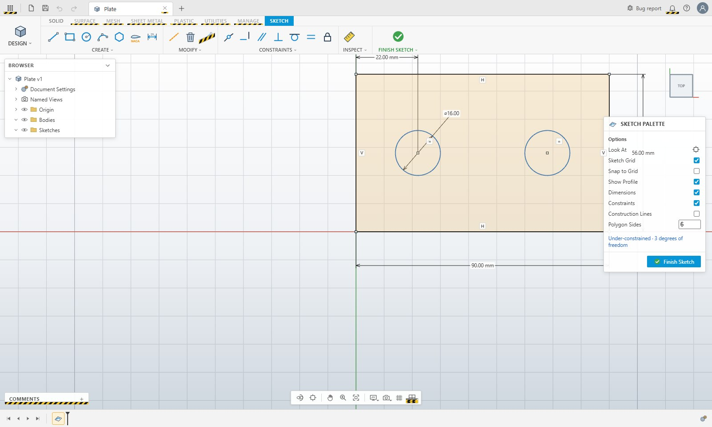

1Constrained sketching
Sketches on planes or faces with lines, rectangles, circles, arcs and polygons, driven by a constraint solver. Sketch Dimension (D) infers lengths, distances, angles, diameters and radii; constraint glyphs are selectable, fully constrained geometry turns black, and the Sketch Palette shows the remaining degrees of freedom.